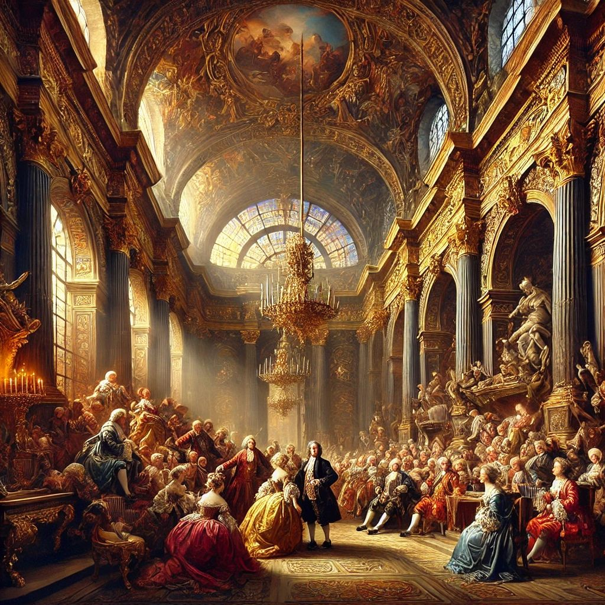
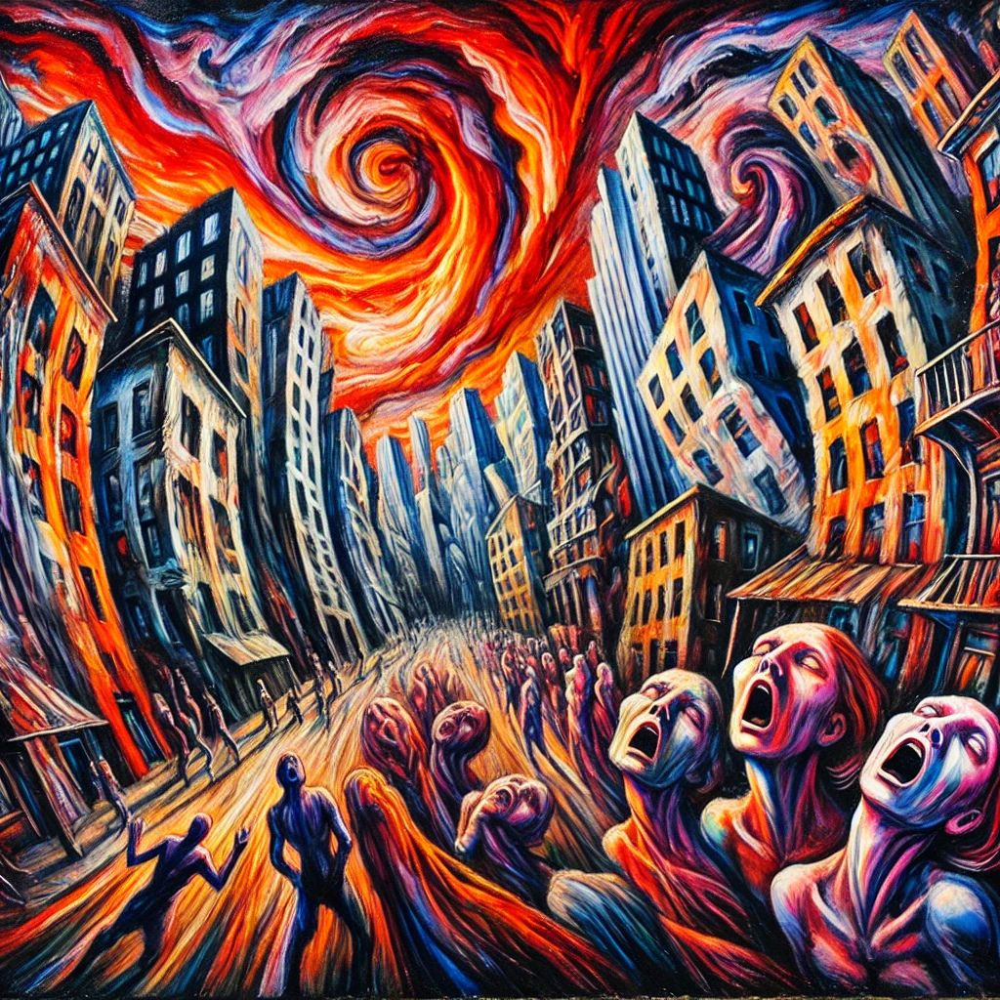

Classificador de Estilos de Pintura
Utilizando IA para reconhecer estilos artísticos.

Barroco
Estilo dramático e ornamentado, marcado por forte contraste de luz e sombra, realismo detalhado e intensa emoção.

Neoclassicismo
Inspirado na arte clássica greco-romana, enfatiza a simetria, harmonia e idealização da forma humana.
Realismo
Busca representar a realidade sem idealizações, focando no cotidiano, na precisão dos detalhes e na vida comum.

Expressionismo
Movimento artístico que enfatiza a expressão subjetiva, com cores vibrantes, pinceladas intensas e distorção das formas.